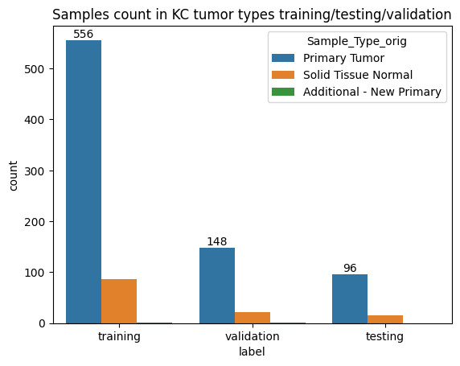

In this analysis, we'll be using gene expression data to classify different types of kidney cancer. We'll go through the process of data preprocessing, model training, and evaluation using an ensemble of supervised learning methods.
We start by loading gene expression data and clinical information:
import pandas as pd
import numpy as np
import matplotlib.pyplot as plt
import seaborn as sns
fpkm_unstr_df_with_labels = pd.read_csv('./Transcriptomics/data/processed_data/fpkm_unstr_data_with_labels.csv')
exposure_tsv = pd.read_csv('./Transcriptomics/data/clinical.cart.2023-10-29/exposure.tsv', sep='\t')
# Merge data
ge_kidney_cancer_data_with_tgca_labels = pd.merge(fpkm_unstr_df_with_labels,
exposure_tsv[['case_submitter_id', 'project_id']],
left_on='Case_ID',
right_on='case_submitter_id')
We apply log transformation to gene expression values and visualize the distribution:
description_df = fpkm_unstr_df_with_labels.iloc[:, :60660].describe().reset_index()
showing_value_range = description_df[description_df['index'].isin(['min', 'mean', 'max'])].iloc[:,1:].values.flatten()
ax = sns.distplot(showing_value_range)
ax.set_title("Distribution of min, mean, max of all gene expression values")

We split our data into training, validation, and test sets:
from sklearn.model_selection import train_test_split
# Split data into training+validation and test sets
train_val_ids, test_ids = train_test_split(ge_kidney_cancer_data_with_tgca_labels['Case_ID'],
test_size=0.2,
stratify=ge_kidney_cancer_data_with_tgca_labels['project_id'],
random_state=42)
# Further split training+validation into training and validation sets
train_ids, val_ids = train_test_split(train_val_ids,
test_size=0.25,
stratify=ge_kidney_cancer_data_with_tgca_labels.loc[train_val_ids, 'project_id'],
random_state=42)
# Create a dataframe to store the split information
train_val_test_ids_df = pd.DataFrame({
'Case_ID': ge_kidney_cancer_data_with_tgca_labels['Case_ID'],
'project_id': ge_kidney_cancer_data_with_tgca_labels['project_id'],
'split': np.where(ge_kidney_cancer_data_with_tgca_labels['Case_ID'].isin(train_ids), 'train',
np.where(ge_kidney_cancer_data_with_tgca_labels['Case_ID'].isin(val_ids), 'val', 'test'))
})
# Visualize the split
plt.figure(figsize=(10,5))
ax = sns.countplot(data=train_val_test_ids_df, x='project_id', hue='split')
ax.set_title('Samples count in KC tumor types training/testing/validation')

We train an ensemble of models including Random Forest, XGBoost, and LightGBM:
from sklearn.ensemble import RandomForestClassifier
from xgboost import XGBClassifier
from lightgbm import LGBMClassifier
from sklearn.multioutput import MultiOutputClassifier
# Prepare the data
X_train = ge_kidney_cancer_data_with_tgca_labels.loc[train_ids, gene_cols]
y_train = ge_kidney_cancer_data_with_tgca_labels.loc[train_ids, label_cols]
X_val = ge_kidney_cancer_data_with_tgca_labels.loc[val_ids, gene_cols]
y_val = ge_kidney_cancer_data_with_tgca_labels.loc[val_ids, label_cols]
X_test = ge_kidney_cancer_data_with_tgca_labels.loc[test_ids, gene_cols]
y_test = ge_kidney_cancer_data_with_tgca_labels.loc[test_ids, label_cols]
# Initialize models
rf_model = MultiOutputClassifier(RandomForestClassifier(n_estimators=100, random_state=42))
xgb_model = MultiOutputClassifier(XGBClassifier(n_estimators=100, random_state=42))
lgbm_model = MultiOutputClassifier(LGBMClassifier(n_estimators=100, random_state=42))
# Train models
rf_model.fit(X_train, y_train)
xgb_model.fit(X_train, y_train)
lgbm_model.fit(X_train, y_train)
# Make predictions
y_pred_rf = rf_model.predict(X_test)
y_pred_xgb = xgb_model.predict(X_test)
y_pred_lgbm = lgbm_model.predict(X_test)
# Combine predictions (simple averaging)
y_pred_ensemble = (y_pred_rf + y_pred_xgb + y_pred_lgbm) / 3
y_pred_ensemble = (y_pred_ensemble > 0.5).astype(int)
We evaluate our models using various metrics such as accuracy, precision, recall, and F1-score.
We visualize the true vs predicted values using a violin plot:
# Prepare data for visualization
y_pred_test_df = pd.DataFrame(y_pred_ensemble, columns=y_test.columns)
y_pred_test_df['Sample_ID'] = test_ids.values
y_test_df = pd.DataFrame(y_test)
y_test_df['Sample_ID'] = test_ids.values
y_pred_test_df_mt = y_pred_test_df.melt(id_vars='Sample_ID')
y_test_df_mt = y_test_df.melt(id_vars='Sample_ID')
true_pred_values = pd.merge(y_test_df_mt,
y_pred_test_df_mt,
on=['Sample_ID', 'variable'],
suffixes=('_true', '_pred'))
# Create violin plot
sns.set(rc={'figure.figsize':(20.7,6.27)})
sns.set(style="white")
ax = sns.violinplot(data=true_pred_values, x='variable', y='value_pred', hue='value_true', inner="point", density_norm="count",
inner_kws=dict(box_width=15, whis_width=2, color=".8"))
ax.set_title('True vs Predicted Values for Each Cancer Type')
ax.set_xlabel('Cancer Type')
ax.set_ylabel('Predicted Probability')
plt.legend(title='True Value', labels=['Negative', 'Positive'])
In this analysis, we've demonstrated how to use an ensemble of supervised learning models to classify different types of kidney cancer based on gene expression data. We preprocessed the data, split it into training, validation, and test sets, and trained an ensemble of Random Forest, XGBoost, and LightGBM models. The results show promising accuracy in distinguishing between cancer subtypes, as visualized in the violin plot. This approach could have significant implications for personalized medicine and treatment strategies in kidney cancer.